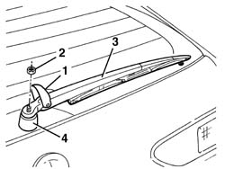
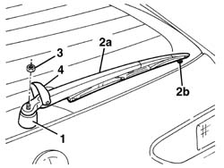

7095B82 Rear windscreen wiper WIPER ARM. - R.R.
- Path
- Procedures > 70 FITTINGS > 7095 MISCELLANEOUS BODYWORK > 7095B interventions on mechnical parts > 7095B82 Rear windscreen wiper WIPER ARM. - R.R.
- Kind
- repair procedure (removal / refitting; the operation number is the code)
- Applies to
- all engines; all production periods
- Interactive page
- https://sloeber94.github.io/elrnDB-a156/en/#/3239008
Applies to: all engines; all production periods; only with equipment: Station Wagon
 Removing
Removing
 Refitting
Refitting1. Lift up the nut cover.
2. Undo the nut.
3. Remove the wiper arm.
4. Remove the protection if necessary.

Applies to: all engines; all production periods; only with equipment: Station Wagon
Refitting
RemovingCheck that the wiper arm and the blade are not damaged.
1. Refit the protection if it was removed.
2. Position wiper arm (2a) and align it with point (2b) on the glass.
3. Tighten the nut.
4. Lower the nut cover panel and do up.
Check the operation of the rear wiper.

Topics that link to this page (4)
- 7035B12 Tailgate rearscreen (bonded type) WINDOW GLASS - R.R. - Includes. cleaning edges of glass and housing in tailgate
- 7035B16 Tailgate windscreen (bonded type) WINDOW GLASS - R.R. - Includes. cleaning housing in tailgate
- 7095B86 Rear windscreen wiper MOTOR. - R.R.
- 7095B88 Rear windscreen INTERMITTENT DEVICE. - R.R.